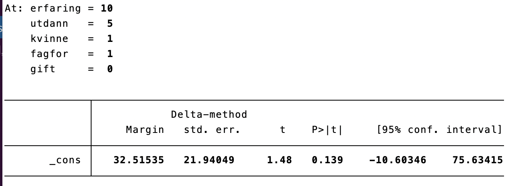
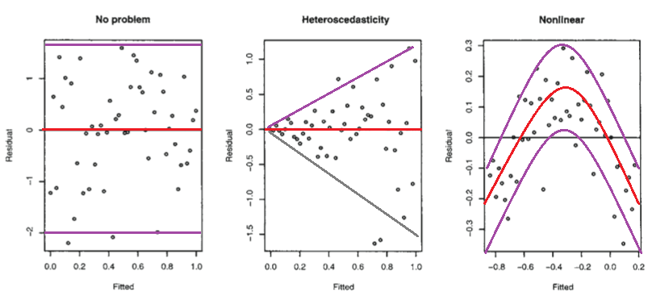
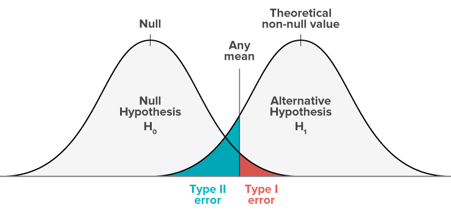
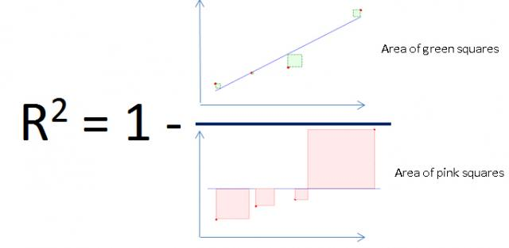
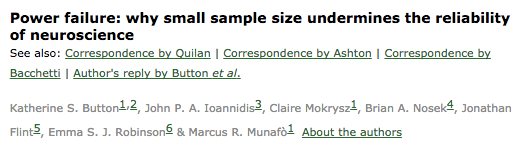

Multiple regression: Assumptions and Power analysis
PSY-8003: Multivariate kvantitative forskningsmetoder
Matthias Mittner
Institute for Psychology
v2022
Outline
- Statistical control in linear regression
- Regression diagnostics
- Model comparison
- Power analysis for linear regression
Statistical control in MLR
- disentangling impact of multiple variables on outcome
- in experiments:
- randomization and constant conditions
- not possible in “field” studies
- measure “confounding” variables
- statistically control for the impact of that variable
Statistical control in MLR
Example: Effect of coaching program on speech performance
Experiment
- manipulate: treatment vs. control
- keep constant:
- room temperature
- size of audience
- gender, age, education
- …
- compare: treatment vs. control
Non-experimental design
- manipulate: treatment vs. control
- measure covariates:
- room temperature
- size of audience
- gender, age, education
- …
- compare: treatment vs. control controlling for covariates
Statistical control in MLR

- adding predictor variables to an MLR model is often called “statistical control”
- often, the effect of a “target” variable can be made clearer by “controlling” for relevant covariates
- Example: are housing prices affected by how environmentally friendly they are?
Example: Housing prices in Trondheim
\[\operatorname{price} = \beta_0 + \beta_{1}(\operatorname{floor\_size}) + \epsilon \]
\[\operatorname{\widehat{price}} = 1009.05 + 28.33(\operatorname{floor\_size}) \]
\[\operatorname{price} = \beta_0 + \beta_{1}(\operatorname{energy\_efficiency}) + \epsilon \]
\[\operatorname{\widehat{price}} = 3735.71 - 287.61(\operatorname{energy\_efficiency}) \]
Example: Housing prices in Trondheim
\[ \operatorname{\widehat{price}} = 3735.71 \color{red}{- 287.61}(\operatorname{energy\_efficiency}) \]
Statistical control
How does it work?
- think: effect of covariates has been “removed” from the data
- calculate regression with “target” predictor as DV
- run regression with residuals as predictor
Statistical control
- The average price of a house decreases by 447 thousand NOK with decreasing energy efficiency rating controlling for the size of the house.
or
- The average price of a house decreases by 447 thousand NOK with decreasing energy efficiency rating keeping the size of the house constant.
Statistical control
Works for additional variables:
- The average price of a house decreases by 447 thousand NOK with decreasing energy efficiency rating controlling for the size of the house, its location and age.
NOTE: The same is true for the other variables!
- The average price increases by 31 thousand NOK for each square meter added to it controlling for its energy efficiency, location and age.
Simpson’s paradox
A significant regression coefficient can weaken, disappear or even change sign when other predictor(s) are introduced in the model.
Simpson’s paradox
A significant regression coefficient can weaken, disappear or even change sign when other predictor(s) are introduced in the model.
Simpson’s paradox
- paradox: even though A > B for both small and large stones, B was better when combined
- reason: treatment A/B applied differentially for small and large stones
Charig, C. R., Webb, D. R., Payne, S. R., & Wickham, J. E. (1986). Comparison of treatment of renal calculi by open surgery, percutaneous nephrolithotomy, and extracorporeal shockwave lithotripsy. Br Med J (Clin Res Ed), 292(6524), 879-882.
Simpson’s paradox
Example: Money in your pocket
- you have a certain amount of money in your pocket (\(y\))
- you count how many of them are one-kroner coins (\(x_1\))
- \(\tt{money} =\beta_0 + \beta_1\tt{num\_onekroner}\) \(\rightarrow\) is \(\beta_1>0\)?
- you also count the total number of coins (\(x_2\))
- \(\tt{money}=\beta_0 + \beta_1\tt{num\_onekroner}+ \beta_2\tt{num\_coins}\) \(\rightarrow\) is \(\beta_1>0\)?
Prediction using fitted regression models
- predict outcome variable for fixed setting of predictors
- Example: How much would an unmarried female worker with 10 years of experience and 5 years of education who is organized in a “fagforening” earn on average? \[\begin{align*} \operatorname{\widehat{loenn}} = -63.21 +& 2.32(\operatorname{erfaring})+ 19.06(\operatorname{utdann})- 46.87(\operatorname{kvinne})\\ +& 24.1(\operatorname{fagfor})+ 0.32(\operatorname{gift}) \end{align*}\] \[\begin{align*} \operatorname{\widehat{loenn}} = -63.21 +& 2.32(10 \text{ years})+ 19.06(5 \text{ years})- 46.87(1)\\ +& 24.1(1)+ 0.32(0) = 32.5 \text{ thousand USD} \end{align*}\]
Prediction using fitted regression models
. margins, at(kvinne=1 utdann=5 erfaring=10 fagfor=1 gift=0)
- CI around prediction
- prediction interval!
Standardized regression coefficients
Which predictor is most important?
. regress loenn kvinne utdann erfaring fagfor gift, beta
\[\begin{align*} \operatorname{\widehat{loenn}} = -63.21 +& 2.32(\operatorname{erfaring})+ 19.06(\operatorname{utdann})- 46.87(\operatorname{kvinne})\\ +& 24.1(\operatorname{fagfor})+ 0.32(\operatorname{gift}) \end{align*}\] \[\begin{align*} \operatorname{\widehat{zloenn}} = 0 +& 0.25(\operatorname{zerfaring}) + 0.45(\operatorname{zutdann}) - 0.21(\operatorname{zkvinne})\\ +& 0.09(\operatorname{zfagfor}) + 0.001(\operatorname{zgift}) \end{align*}\]
Standardized regression coefficients
Which predictor is most important?
- standardized coefficients quantify strength of effect
- conventions:
- \(\beta\le 0.09\) - small effect
- \(0.1 \le \beta\le 0.2\) - medium effect
- \(\beta\ge 0.2\) - large effect
- in addition: (squared) semi-partial correlation
Semi-partial correlation (SPC)
- correlation of predictor with DV after removing the effect of the other predictors from it
- squared SPC: by how much would \(R^2\) be decreased if the variable of interest would be removed from the model \(\approx\) a predictor’s “unique” contribution
Squared semi-partial correlations (SPC)
- total \(R^2=0.24\)
Amount of explained variance: \(R^2\)
- amount of variance explained (\(R^2\)) grows with degrees of freedom (number of predictors)
- even if predictors are unrelated to outcome!
Adjusted \(R^2\)
The adjusted \(R^2_{\text{adj}}\) is a corrected version of the ordinary \(R^2\)
when you increase the number of independent variables in a regression model, regardless of the relevance or usefulness of the added variables, the ordinary \(R^2\) will always increase
such artificial upward shifts in \(R^2\) lead to misjudgement of the explanatory power of the regression models
the \(R^2_{\text{adj}}\) imposes a penalty for increasing the number of independent variables: \[ R_{adj}^2 = 1-(1-R^2){N-1 \over N-K-1} \]
\(K\) predictors with \(N\) measurements
Adjusted \(R^2\)
- given \(H_0\) (no effect at all), \(R^2\) still artificially grows
- adjusting for number of predictors “fixes” that
- however, huge variance for \(R^2_{\text{adj}}\) and naive adjustment
Comparing models …
comparing models using \(R^2\) is not good (artificially increased)
comparing models using \(R^2_\text{adj}\) is better
- but: how strong a difference in \(R^2_\text{adj}\) should be chosen?
using \(F\)-test to compare two models: increase in \(R^2\) significant?
“hierarchical” linear regression (don’t confuse with “mixed” models)
increase model-quality by introducing new (groups of) variables at each step
each new model contains all previous predictors and adds new ones
F-test for model comparison
R
mod1 <- lm(loenn ~ kvinne + alder, data=loenn)
mod2 <- lm(loenn ~ kvinne + alder + utdann, data=loenn)
mod3 <- lm(loenn ~ kvinne + alder + utdann + fagfor, data=loenn)
anova(mod1,mod2,mod3)Analysis of Variance Table
Model 1: loenn ~ kvinne + alder
Model 2: loenn ~ kvinne + alder + utdann
Model 3: loenn ~ kvinne + alder + utdann + fagfor
Res.Df RSS Df Sum of Sq F Pr(>F)
1 452 5151480
2 451 4303810 1 847670 89.4780 < 2e-16 ***
3 450 4263077 1 40733 4.2997 0.03869 *
---
Signif. codes: 0 '***' 0.001 '**' 0.01 '*' 0.05 '.' 0.1 ' ' 1- before: compare regression model against “null model” (no predictors)
- now: compare any two models (that are nested)
Step-wise regression
- we can use this procedure to select “relevant” predictors
- “backward selection”: start with full model and drop least informative predictor
- “forward selection”: start with null-modell and add predictors one on one
Stepwise selection
R
mod <- lm(loenn ~ kvinne + alder + utdann + fagfor + gift + kvierf + erfaring, data=loenn)
step(mod)Start: AIC=4171.64
loenn ~ kvinne + alder + utdann + fagfor + gift + kvierf + erfaring
Df Sum of Sq RSS AIC
- alder 1 30 4212558 4169.6
- erfaring 1 328 4212857 4169.7
- gift 1 384 4212912 4169.7
- utdann 1 6716 4219245 4170.4
- kvinne 1 7411 4219940 4170.4
<none> 4212528 4171.6
- fagfor 1 36056 4248585 4173.5
- kvierf 1 49348 4261877 4174.9
Step: AIC=4169.64
loenn ~ kvinne + utdann + fagfor + gift + kvierf + erfaring
Df Sum of Sq RSS AIC
- gift 1 398 4212956 4167.7
- kvinne 1 7394 4219952 4168.4
<none> 4212558 4169.6
- fagfor 1 36040 4248598 4171.5
- kvierf 1 49960 4262519 4173.0
- erfaring 1 292567 4505125 4198.2
- utdann 1 1011811 5224370 4265.6
Step: AIC=4167.69
loenn ~ kvinne + utdann + fagfor + kvierf + erfaring
Df Sum of Sq RSS AIC
- kvinne 1 7696 4220652 4166.5
<none> 4212956 4167.7
- fagfor 1 35841 4248797 4169.5
- kvierf 1 49572 4262528 4171.0
- erfaring 1 309197 4522153 4197.9
- utdann 1 1012560 5225516 4263.7
Step: AIC=4166.52
loenn ~ utdann + fagfor + kvierf + erfaring
Df Sum of Sq RSS AIC
<none> 4220652 4166.5
- fagfor 1 37529 4258181 4168.5
- kvierf 1 280479 4501132 4193.8
- erfaring 1 491271 4711923 4214.6
- utdann 1 1019601 5240254 4263.0
Call:
lm(formula = loenn ~ utdann + fagfor + kvierf + erfaring, data = loenn)
Coefficients:
(Intercept) utdann fagfor kvierf erfaring
-87.998 19.380 23.157 -2.353 3.424 Assumptions of linear regression

- statistical independence of measurements
- linear relation between IVs and DV
- additivity of the predictors
- no collinearity bw predictors
- equal variance of errors for different values of the predictor variables (homoscedasticity)
- normality of residuals
Statistical independence
Definition
Data are independent if the value of some observations do not depend on the value of other observations.
- Example: Quality-control sends the same blood-samples to two independent labs for analysis. Knowing the value of one of the labs’ analysis will change what you expect to find from the other lab.
- Example: You invite a participant to interview about her political view. At the end of the interview, you ask her for the contact of a friend to interview next.
Statistically dependent pizza
- you take a slice of the pizza: What is the probability to get a mushroom?
- you take another slice: did the probability change?
Linear relation between IVs and DV
- many real-life relationships are not linear
- (inverse) U-shaped relationships (e.g., with age)
- periodic relationships (e.g., seasons, day, …)
- exponential relationships (e.g., COVID)
- logarithmic relationships (e.g., growth, …)
Linear relation between IVs and DV
- in the presence of non-linearity, linear regression is biased
- can produce misleading results (e.g., hide the presence of an effect)
- can produce in bad predictive accuracy!
- important to spot nonlinearities!
- scatter-plots, tests for nonlinearity, investigating regression residuals
Linear relation between IVs and DV

- non-linearities can be accounted for in linear regression!
- using transformations of the input variable to introduce nonlinear relationships
- polynomial regression
- log-transforming variables
- …
Additivity of the predictors

\[Y=\beta_0 + \beta_1 X_1 + \beta_2 X_2\]
Definition
- the effect of changes in one predictor is independent of the effect(s) of changes in other predictor(s)
Additivity of the predictors
\[Y=\beta_0 + \beta_1 X_1 + \beta_2 X_2 + \beta_3 X_1\times X_2\]
- sometimes not appropriate
- price of apartment as function of size: independent of location?
- impact of gas pedal on speed: independent of car brand?
- can be modeled using interaction (product-) terms
Predictor collinearity
Definition:
Two predictor variables are perfectly collinear if there is an exact linear relationship between the two, so the correlation between them is equal to 1 or −1.
Problem: impossible to attribute effect to one or the other variable
extends to multiple variables: one predictor can be a linear combination of several others
extends to “imperfect” collinearity (i.e., very high correlations bw predictors)
Examples:
- include both “age” and “date of birth” in a regression model
- include both “total time”, “time for first half” and “time for second half”
Homoscedasticity
- variance is about the same across predictor-levels
Homoscedasticity
for categorical predictors
Homoscedasticity
for continuous predictors
Homoscedasticity…
Example 1
We investigate daily calorie consumption across two groups:
- a sample of students from Norges Idretthøyskole
- a sample of Trondheim residents stopped in the city-center
Example 2
We investigate finishing time for running marathon (~ 42 km) and use “years of running experience” as a predictor.
Normality of residuals
- linear regression assumes that the residuals \[\varepsilon_i = Y_i - \hat{Y}_i = Y_i - (\beta_0 + \beta_1 X_1 + ... + b_n X_n)\] are normally distributed
Normal distribution
Which of those curves are normal distributions?
Normal distribution
Which of those curves are normal distributions?
- regression robust against small deviations from normality
- what’s “small”? inspection/statistical tests
Normal distribution
test for a normal distribution
- plot the histogram
- QQ-plot
- compare mean, median, mode
- skewness/kurtosis values
- Kolmogoroff-Smirnoff/Shapiro-Wilks Test
Normal distribution

Regression diagnostics
- outlier detection
- standardized residuals
- Cooks’ distance
- leverage
- nonlinearity/specification
- predicted/residual plot
- heteroskedasticity
- predicted/residual plot
- collinearity
- variance inflation factor (VIF)
Regression diagnostics
Casewise diagnostics: standardized residuals
Standardized residuals:
- In an average sample, 95% of standardized residuals should lie between \(\pm\) 2%.
- 99% of standardized residuals should lie between \(\pm\) 2.5%.
- Any case for which the absolute value of the standardized residual is 3 or more, is likely to be an outlier.
Outliers vs. Influential/High leverage points
- outliers can have a strong impact on regression equation - how much does the equation change, when I leave out the outlier? \(\rightarrow\) leverage, Cook’s distance - Demo:
Outliers vs. influential datapoints
- not every outlier has strong negative impact on regression results
- outlier: defined by distance from model-prediction
- “influential point”: defined by its impact on regression
Casewise diagnostics: Leverage
- leverage is a measure of how far away the independent variable values of an observation are from those of the other observations
- high-leverage points are often “influential” points
- convention: check points with \(|h| \ge \frac{(2k+2)}{n}\)
Casewise diagnostics: Cooks’ distance
Cooks’ d:
- Measures the influence of a single case \(i\) on the model as a whole:
- how much does the model change when deleting case \(i\)
- \[D_i = \frac { \sum_{j=1}^n \left( \widehat{Y}_j - \widehat{Y}_{j(i)} \right)^2 } {k s^2}\]
- Weisberg (1982): Absolute values greater than 1 may be cause for concern.
- Other convention: check points for \(D>\frac{4}{n}\)
Casewise diagnostics: DFIT
DFIT:
- conceptually similar to Cooks’ d (only one of them needs to be calculated)
- convention: look for (absolute) values that are \(>2\times \sqrt{\frac{k}{n}}\)
Casewise diagnostics: Influence of cases on individual coefficients
- how is each regression coefficient changed by deleting the observation?
- when being included in the analysis (as compared to being excluded), a specific case increases the coefficient for predictor X by DFBETA \(\times\) standard errors
- convention: look for dfbeta \(> 2/\sqrt{n}\)
Multicollinearity

- Multicollinearity exists if predictors are highly correlated.
- Variance-inflation factor (VIF):
- model: \(Y = \beta_0 + \beta_1 X_1 + \beta_2 X_2 + \beta_3 X_3\)
- calculate \(R_1^2\) for: \(X_1 = \beta_0 + \beta_1 X_2 + \beta_2 X_3\)
- VIF\(_1=\frac{1}{1-R_1^2}\)
- VIF should be less than 10 (Myers, 1990)
- Tolerance=1/VIF should be more than 0.1
- measures: How much is the SE of a coefficient increased because of collinearity?
Linearity

- plot predicted values vs. residuals
- Case 1: residuals spread evenly around zero - linear relationship sufficient
- Case 2: clear inverse U-shaped structure - most likely nonlinear structure present
Linearity: Predicted values vs. residuals plot


Heteroscedasticity

- plot predicted values vs. residuals
- variance (spread) of values around zero-line increasing/decreasing?
Predicted values vs. residuals plot
- values should spread evenly around 0
- no nonlinear structure should be obvious
- variance should stay approximately the same
Normality
- inspect histogram of (standardized) residuals)
- should look like a normal distribution (bell-curve)
- inspect QQ-plot
- all points should be close to the diagonal line
Residual histograms
- these are all normal!
Residual histograms
- these are not normal!
QQ-plot: Examples
- these are all normal!
QQ-plot: Examples
- these are not normal!
Summary
- a single outlier can result in many diagnostic tests to fail
- heteroskedasticity, normality, specification etc
- removing outliers can help
- but: specifying outliers conditional on data is tricky!
- transformations of variables can help
- log-transform (X or Y)
- square-root transform
- normality of residuals does not affect validity of coefficient estimates
- but does affect \(F\)/\(t\)/\(p\) values!
Statistical Power analysis
What is “power”?
- power is the probability to detect a real effect
- power increases with sample size
- if it is too low:
- a study is most likely to be inconclusive
- a study is almost as likely to find an effect in the opposite direction
- a found effect is likely to be overestimated
What is power?
Basic idea
If the result I am looking for really exists in the population, how likely am I to detect it in my sample?
- not trivial, because sample is random
What is power?
More formal definition
The “power” of a binary hypothesis test is the probability that the test correctly rejects \(H_0\) when the alternative hypothesis \(H_1\) is true. Alternatively, it is the probability of accepting \(H_1\) when it is true—that is, the ability of a test to detect an effect, if the effect actually exists.
\[\text{power} = P\big( \text{reject} H_0 \big| H_1 \text{ is true} \big)\]
What is a power-analysis?
- find out this probability for a given research question
- determine how likely you are to make an error
- what sample size is needed?
What determines power?
A power-analysis attempts to balance the following ingredients:
- Type-I error rate (\(\alpha\))
- Type-II error rate (\(\beta\)) \(\rightarrow\) power\(=(1-\beta)\)
- Effect-size (effect of variable and variation)
- Sample size (\(N\))
Knob 1+2: \(\alpha\) and \(\beta\)
{Type I and Type II errors}
- significance level \(\alpha\) determines false-alarm rate
- power \((1-\beta)\) determines miss-rate
- both may be important!
What is a power-analysis?
Power-analysis as a computer program
Basic idea:
Define how you think the data is generated in the population (What is the size of the effect? Normally distributed? ) - make a computer program that produces random datasets with these properties
Define what would mean a “success” in your statistical analysis (\(p\)-value \(<.05\)?)
Generate a large number of data-sets using step 1
How often (%) did you get a “success” in terms of step 2? \(\rightarrow\) this percentage is called power
Power-analysis as a computer program
{Example for simple t-test}
- Define data in population:
Power-analysis as a computer program
{Example for simple t-test}
- Define data in population
- Define success
Power-analysis as a computer program
{Example for simple t-test}
- Define data in population
- Define success
- Repeat this often
Power-analysis as a computer program
{Example for simple t-test}
- Define data in population
- Define success
- Repeat this often
- Calculate % success = power
Power calculation by simulation
# say we want to investigate the relationship between IQ and points on our exam
N=20 # we will collect N=50 subjects
beta=2 # we assume that subjects will score 2 more points in our exam for each additional point on the IQ scale
n.simulations=1000 # how many simulations (of the hypothetical experiment)?
pv=vector(length = n.simulations) # collect all p-values here
for( i in 1:n.simulations ){
# we believe that the IQ in the group will be between 90 and 120
IQ = runif(N, min=90, max=120)
# we believe that the exam is related to IQ points but that there is a lot of noise
exam.points = beta*IQ + rnorm(N, mean=0, sd=40)
# calculate the linear regression and the resulting p-value for IQ
pv[i]=summary(lm( exam.points ~ IQ))$coefficients["IQ",4]
}
## what is a histogram of all the p-values?
hist(pv, breaks=40)
## how many p-values were significant?
sum(pv<0.05)
## what is the probability that the p-value is significant if the world is as I think it is?
power=sum(pv<0.05)/n.simulations
power
## how often do I get a non-significant results EVEN THOUGH the effect is there?
1-power- Demo:
power_linreg.R
What determines power?
A power-analysis attempts to balance the following ingredients:
- Type-I error rate (\(\alpha\))
- Type-II error rate (\(\beta\)) \(\rightarrow\) power\(=(1-\beta)\)
- Effect-size (effect of variable and variation)
- Sample size (\(N\))
Knob 1+2: \(\alpha\) and \(\beta\)
Type I and Type II errors
- significance level \(\alpha\) determines false-alarm rate
- power \((1-\beta)\) determines miss-rate
- both may be important!
Type I and Type II Errors

- when everything else is equal, \(\alpha\) and \(\beta\) are antagonistic
- i.e., increasing Type I error rate decreases Type II rate and vice versa
Knob 3: Effect size
How easy is it to find evidence for the effect?

- how strong relationship between predictor and outcome?
- how “noisy” is the measurement?
- low-noise: measurement length of finger with a ruler
- high-noise: measurement of mood with a questionnaire
Effect size in linear regression

Coefficient of determination \(R^2\)
- “amount of explained variance”
- \(R^2=1-\frac{SS_{residuals}}{SS_{total}}\)
Effect size in linear regression
\(R^2\) for multiple linear regression
Issues with \(R^2\)
- \(R^2\) ranges from 0 (no variance explained) to 1 (everything explained)
- \(R^2\) is a property of the full regression model
- does not say anything about single predictors
- Example: \[\texttt{IQ} = \beta_0 + \beta_1\cdot\texttt{age}+ \beta_2\cdot\texttt{socioeconomic status}\]
- if you get a high \(R^2\) for this model, it is unclear whether it is caused by
age,socioeconomic statusor both
- if you get a high \(R^2\) for this model, it is unclear whether it is caused by
Effect size in linear regression
Cohen’s \(f^2\)
a more flexible measure of effect size is Cohen’s \(f^2\)
can be applied to a full regression model or compare impact of single or multiple combined predictors
Full-model against \(H_0\): \(f^2=\frac{R^2}{1-R^2}\) (explained / unexplained variance)
impact of predictor B added to model A: \(f^2=\frac{R^2_{AB}-R^2_{A}}{1-R^2_{AB}}\)
Cohen’s conventions:
- 0.02 - small,
- 0.15 - medium
- 0.35 - large
Cohen’s \(f^2\)
for adding predictors
- How much of the variance is explained by adding a predictor to an already existing regression model?
- Example:
\[\texttt{IQ} = \beta_0 + \beta_1\cdot\texttt{age}+ \beta_2\cdot\texttt{socioeconomic status}\]
How much does
ageadd to \(\texttt{IQ} = \beta_0 + \beta_2\cdot\texttt{socioeconomic status}\)?How much does
socioeconomic statusadd to \(\texttt{IQ} = \beta_0 + \beta_1\cdot\texttt{age}\)?\(f^2=\frac{R^2_{AB}-R^2_{A}}{1-R^2_{AB}}\)
Knob 4: Sample size \(N\)
How many subjects do I have to measure?

- sample size determines precision of estimates
- larger sample size, all other things equal, leads to higher power and/or lower \(\alpha\)
- no relationship between effect-size and \(N\)
- economic constraints
- ethical considerations
Sample size
Effect on power, \(\alpha\) and effect-size
Example: Random Datasets
- we simulate \(N=20\) cases with \(k=6\) variables (predictors)
- all data are from a standard normal distribution with no correlations between them
- we simulate 1000 such datasets, fit a linear regression and report \(R^2\) (amount of explained variance)
Example: Random Datasets
Probability \((R^2>0.3)=51\) %
Probability \((R^2>0.5)=10\) %
Conclusion: under \(H_0\), high effect sizes are likely \(\rightarrow\) only for extreme effect-sizes, can we reject \(H_0\) (here, maybe \(R^2>0.8\))
Example: Random Datasets
Influence of sample size \(N\)
- the larger the sample size:
- the less “spurious” high effect sizes
- the “easier” it is to reject \(H_0\)
Example: Random Datasets
Influence of number of predictors \(k\)
- the more predictors with equal sample size, the more “spurious” high effect sizes
- fewer predictors:
- less sample size is required for same level of spurious effect sizes
Factors influencing statistical power in linear regression
everything in one graph…
Types of power-analysis
a-priori
- before collecting any data
- usually: determine needed sample size to detect a minimal effect size
post-hoc
- after data has been collection
- usually: calculate effect-size and calculate power you had with your used sample-size
- fatally flawed!
- effect-sizes are over-estimated and so is power!
Post-hoc power analysis
When is it useful?

- post-hoc power analysis is never useful when the used effect-size estimate is the observed effect size of a statistically significant finding
- Why: statistically significant findings are guaranteed to have an effect size that is strong enough to become significant! (“significance filter”)
- in underpowered studies: effect-sizes are usually strongly overestimated (“garden of forking pathes”)
Practical power-analysis
Choice of parameters
Common strategy of a priori power analysis:
- Type-I error rate: \(\alpha=0.05\) (by convention)
- Type-II error rate: \(\beta=0.20\) (at least power\(=0.8\) by convention)
- Effect-size: ?? (crucial bit!)
- Sample size: ?? (theoretical and practical considerations!)
\(\rightarrow\) find a reasonable estimate for the effect size and calculate how many participants you would need to find it
Power analysis in G*Power
- specialized, easy-to-use software
- http://www.gpower.hhu.de/en.html
Power analysis: Example
Test overall effect
Research Question:
Is at least one of the predictors useful in predicting the response?
Statistical Test
- Is \(R^2>0\)?
- number predictors?
- set significance level and desired power
- effect-size \(f^2\)?
- click “Determine”…
Power analysis: Example
Test overall effect
Power analysis: Example 2
Effect of a single predictor
Research Question:
- How much does a “special” predictor increase the \(R^2\) of the model?
- E.g., What is the effect of age on health when controling for smoking?
- Effect: Increment in \(R^2\) relative to model which excludes “special” predictor.
- Example:
- Calculate \(R^2_{full}\) for: \(\texttt{health}=b_0+b_1\texttt{smoke} + b_2\text{age}\)
- Calculate \(R^2_{reduced}\) for: \(\texttt{health}=b_0+b_1\texttt{smoke}\)
- “effect” is \(R^2_{full}-R^2_{reduced}\)
- calculate effect-size \(f^2=\frac{R^2_{full}-R^2_{reduced}}{1-R^2_{full}}\)
Power analysis: Example 2
Effect of a single predictor
Power analysis: Example 3
Effect of a multiple combined predictors
Research Question:
- How much does adding some “special” predictors increase the \(R^2\) of the model?
- E.g., What is the effect of age and sex on health when controling for smoking?
- Effect: Increment in \(R^2\) relative to model which excludes “special” predictors.
- same logic as in single-predictor case applies!
- Example:
- Calculate \(R^2_{full}\) for: \(\texttt{health}=b_0+b_1\texttt{smoke} + b_2\text{age}+b_3\text{sex}\)
- Calculate \(R^2_{reduced}\) for: \(\texttt{health}=b_0+b_1\texttt{smoke}\)
- “effect” is \(R^2_{full}-R^2_{reduced}\)
- calculate effect-size \(f^2=\frac{R^2_{full}-R^2_{reduced}}{1-R^2_{full}}\)
Sample-size: Rules of Thumb
- rule of thumb (Green, 1991):
- if testing for overall fit: \(N=50+8k\)
- if testing for individual predictors: \(N=104+k\)
- if testing both: take maximum of the two
- oversimplification: real power analysis requires to think about
- power to find effect
- significance level
- effect size
- effect on which level?
- best used for judging other’s research, not for planning your own
Why is sufficient power important?
Reproducibility crisis…

- growing concern about replicability
- among other reasons caused by underpowered studies
Why is sufficient power important?
Replicability in psychological research

Open Science Collaboration. (2015). Estimating the reproducibility of psychological science. Science, 349(6251), aac4716.
Underpowered studies in psychology and neuroscience
- Many extremely underpowered studies in psychology and neuroscience
- Results in unstable estimates and spurious results
- Together with analytical flexibility \(\rightarrow\) guarantees statistical significance!
Button, K. S., Ioannidis, J. P., Mokrysz, C., Nosek, B. A., Flint, J., Robinson, E. S., & Munafò, M. R. (2013). Power failure: why small sample size undermines the reliability of neuroscience. Nature Reviews Neuroscience, 14(5), 365-376.
A Demonstration of Chronological Rejuvenation
[…] we asked 20 University of Pennsylvania undergraduates to listen to either “When I’m Sixty-Four” by The Beatles or “Kalimba.” Then, in an ostensibly unrelated task, they indicated their birth date (mm/dd/yyyy) and their father’s age. We used father’s age to control for variation in baseline age across participants.
An ANCOVA revealed the predicted effect: According to their birth dates, people were nearly a year-and-a-half younger after listening to “When I’m Sixty-Four” (adjusted M=20.1 years) rather than to “Kalimba” (adjusted M=21.5 years), F(1,17)=4.92, p=.040.
A Demonstration of Chronological Rejuvenation
A Demonstration of Chronological Rejuvenation
Analytical flexibility and false-positive findings
The nominal alpha-level loses its meaning when additional choices are flexible
- Sequential data-collection with intermediate testing
- Several DVs
- Several covariates/conditions
- …